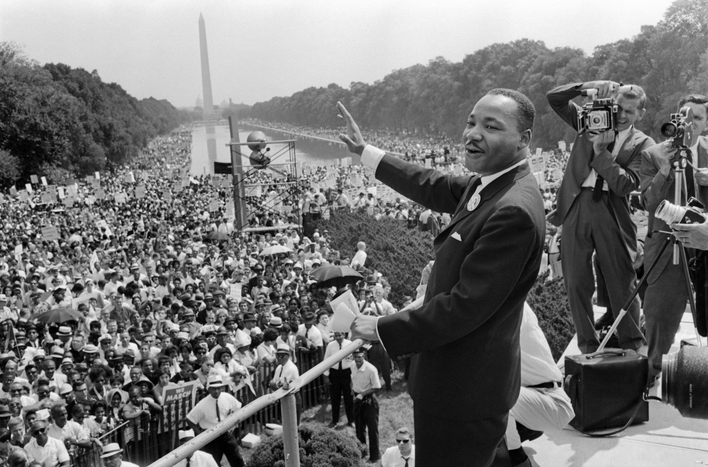

Martin Luther King
"I have a dream"

Civil rights leader Martin Luther King jr. address the crowd at the Lincoln Memorial Washington DC
Here is a time line of Martin Luther Kings life :
- 1929
Jan. 15: Michael King is born in Atlanta. His father changes the boy’s name, as well as his own, to Martin Luther King several years later.
- 1944
Sept. 20: King enrolls at Morehouse College after passing the entrance exam at age 15.
- 1946
Aug. 6: The Atlanta Constitution publishes a letter to the editor from King supporting minority rights.
- 1948
Feb. 25: King is ordained and becomes assistant pastor at Ebenezer Baptist Church in Atlanta, his father’s church.
June 8: King graduates from Morehouse College with bachelor’s degree in sociology.
Sept. 14: King enters Crozer Theological Seminary in Chester, Pa.
- 1951
May 8: King graduates from Crozer with bachelor of divinity degree. He delivers valedictory address.
Sept. 13: King begins graduate studies in systematic theology at Boston University’s School of Theology.
- 1952
January: King meets Coretta Scott in Boston.
- 1953
June 18: King and Coretta Scott are married near Marion, Ala. King’s father officiates at the service.
- 1954
Sept. 1: King begins his pastorate at Dexter Avenue Baptist Church in Montgomery, Ala.
- 1955
June 5: King earns doctorate from Boston University.
Dec. 5: King is named president of the Montgomery Improvement Association.
- 1956
Jan. 30: King’s home is bombed while he is speaking at a meeting. His wife and daughter are unharmed.
- 1957
Jan. 10: King is named chairman of what becomes the Southern Christian Leadership Conference (SCLC).
Feb. 18: King appears on the cover of Time magazine.
May 17: King delivers his first national address, “Give Us the Ballot,” at the Prayer Pilgrimage for Freedom at the Lincoln Memorial in Washington.
- 1958
June 23: King and other civil rights leaders meet with President Dwight Eisenhower in Washington.
Sept. 20: At a book signing in Harlem, King is stabbed with a letter opener by a mentally ill woman. Doctors remove the seven-inch blade from his chest.
- 1960
Feb. 1: King moves from Montgomery to Atlanta to focus on the civil rights struggle.
Oct. 19: King is arrested at a sit-in demonstration at an Atlanta department store. He is sentenced to four months of hard labor — for violating a suspended sentence in a 1956 traffic violation. He is released on $2,000 bond.
- |1961
Dec. 16: King and hundreds of others are arrested in desegregation campaign in Albany, Ga.
- 1962
July 27: King is arrested at a prayer vigil in Albany and spends two weeks in jail. He leaves Aug. 10.
Sept. 28: A member of the American Nazi Party hits King in the face twice at an SCLC conference in Birmingh
- 1963
April 16: After being arrested for ignoring an Alabama state court injunction against demonstrations, King writes his famous Letter from a Birmingham Jail, a defense of nonviolent resistance to racism.
Aug. 28: King delivers his “I Have a Dream” speech at the Lincoln Memorial as more than 200,000 demonstrators take part in the March on Washington for Jobs and Freedom.
Sept. 15: Four girls are killed when a bomb explodes at the 16th Street Baptist Church in Birmingham.
Sept. 18: King delivers eulogy for three of the slain girls.
- 1964
Jan. 3: Time magazine names King “Man of the Year” for 1963.
June 11: King and 17 others are jailed for trespassing after demanding service at a whites-only restaurant in St. Augustine, Fla.
Dec. 10: King wins Nobel Peace Prize.
- 1965
March 17-25: After voting rights marchers are attacked and beaten by police in Selma, Ala., King peacefully leads civil rights marchers from Selma to Montgomery.
Aug. 11: Rioting in the Watts section of Los Angeles leads King to address economic inequality.
Aug. 12: King gives his first speech against the Vietnam War.
- 1966
Jan. 26: King and his wife move into a Chicago slum apartment to demand better housing and education in northern U.S. cities.
- 1967
April 4: In speech at a New York City church, King demands U.S. make greater effort to end Vietnam War.
- 1968
March 23: King leads 6,000 protesters in support of striking sanitation workers in Memphis. The march ends with violence and looting.
April 3: King returns to Memphis, intending to lead a peaceful march. At an evening rally, he delivers his final speech, “I’ve Been to the Mountaintop.”
April 4: King is shot and killed on the balcony of the Lorraine Motel.
April 9: King is buried in Atlanta.
Jan. 15: Michael King is born in Atlanta. His father changes the boy’s name, as well as his own, to Martin Luther King several years later.
Sept. 20: King enrolls at Morehouse College after passing the entrance exam at age 15.
Aug. 6: The Atlanta Constitution publishes a letter to the editor from King supporting minority rights.
Feb. 25: King is ordained and becomes assistant pastor at Ebenezer Baptist Church in Atlanta, his father’s church. June 8: King graduates from Morehouse College with bachelor’s degree in sociology. Sept. 14: King enters Crozer Theological Seminary in Chester, Pa.
May 8: King graduates from Crozer with bachelor of divinity degree. He delivers valedictory address. Sept. 13: King begins graduate studies in systematic theology at Boston University’s School of Theology.
January: King meets Coretta Scott in Boston.
June 18: King and Coretta Scott are married near Marion, Ala. King’s father officiates at the service.
Sept. 1: King begins his pastorate at Dexter Avenue Baptist Church in Montgomery, Ala.
June 5: King earns doctorate from Boston University. Dec. 5: King is named president of the Montgomery Improvement Association.
Jan. 30: King’s home is bombed while he is speaking at a meeting. His wife and daughter are unharmed.
Jan. 10: King is named chairman of what becomes the Southern Christian Leadership Conference (SCLC). Feb. 18: King appears on the cover of Time magazine. May 17: King delivers his first national address, “Give Us the Ballot,” at the Prayer Pilgrimage for Freedom at the Lincoln Memorial in Washington.
June 23: King and other civil rights leaders meet with President Dwight Eisenhower in Washington. Sept. 20: At a book signing in Harlem, King is stabbed with a letter opener by a mentally ill woman. Doctors remove the seven-inch blade from his chest.
Feb. 1: King moves from Montgomery to Atlanta to focus on the civil rights struggle. Oct. 19: King is arrested at a sit-in demonstration at an Atlanta department store. He is sentenced to four months of hard labor — for violating a suspended sentence in a 1956 traffic violation. He is released on $2,000 bond.
Dec. 16: King and hundreds of others are arrested in desegregation campaign in Albany, Ga.
July 27: King is arrested at a prayer vigil in Albany and spends two weeks in jail. He leaves Aug. 10. Sept. 28: A member of the American Nazi Party hits King in the face twice at an SCLC conference in Birmingh
April 16: After being arrested for ignoring an Alabama state court injunction against demonstrations, King writes his famous Letter from a Birmingham Jail, a defense of nonviolent resistance to racism. Aug. 28: King delivers his “I Have a Dream” speech at the Lincoln Memorial as more than 200,000 demonstrators take part in the March on Washington for Jobs and Freedom. Sept. 15: Four girls are killed when a bomb explodes at the 16th Street Baptist Church in Birmingham. Sept. 18: King delivers eulogy for three of the slain girls.
Jan. 3: Time magazine names King “Man of the Year” for 1963. June 11: King and 17 others are jailed for trespassing after demanding service at a whites-only restaurant in St. Augustine, Fla. Dec. 10: King wins Nobel Peace Prize.
March 17-25: After voting rights marchers are attacked and beaten by police in Selma, Ala., King peacefully leads civil rights marchers from Selma to Montgomery. Aug. 11: Rioting in the Watts section of Los Angeles leads King to address economic inequality. Aug. 12: King gives his first speech against the Vietnam War.
Jan. 26: King and his wife move into a Chicago slum apartment to demand better housing and education in northern U.S. cities.
April 4: In speech at a New York City church, King demands U.S. make greater effort to end Vietnam War.
March 23: King leads 6,000 protesters in support of striking sanitation workers in Memphis. The march ends with violence and looting. April 3: King returns to Memphis, intending to lead a peaceful march. At an evening rally, he delivers his final speech, “I’ve Been to the Mountaintop.” April 4: King is shot and killed on the balcony of the Lorraine Motel. April 9: King is buried in Atlanta.
"If you can't fly then run, if you can't run then walk,
if you can't walk then crawl, but whatever you do
you have to keep moving forward."
- Martin Luther King